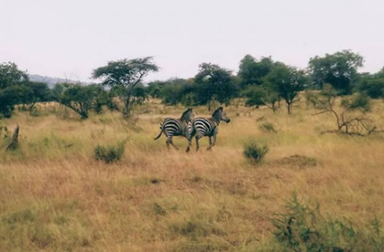
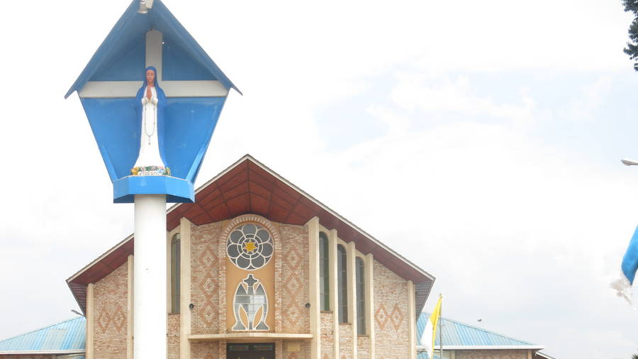
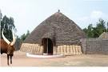

Akagera Park
Volcanoes

Kibeho
Nyanza Museum
Akagera National Park is located in the eastern province of the Gatsibo district. Wildlife including lions, elephants, zebras, giraffes and many species of birds can all be found in the Park.
Volcanoes are located in northern province. There you will find gorillas that hold a special place in the heart of Rwanda. Every year there are celebrations in honour of the new born gorillas and many visitors come to join.
Kibeho is considered the Holy Land and is located in southern province. It is a place of apparition of Mary Mother of God and every year on August 15th, people gather from all over for a pilgrimage.
Nyanza Museum is located in southern province, it holds the ancient history of the kings. At the museum one can find more information on the Royal capital of Rwanda and the beautiful cows known as Inyambo.